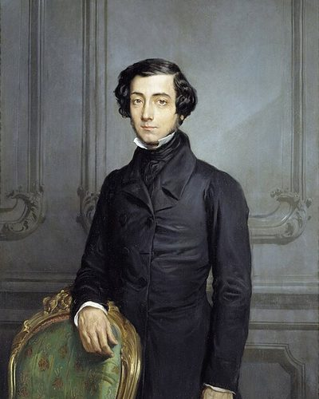

Ideologies / Conservative
What is Conservative Liberalism?
Conservative Liberalism is a political ideology in the Conservative family. Tocqueville took the spread of equality to be irreversible and asked how liberty could survive it. He warned of the tyranny of the majority, of citizens withdrawing into private life, and of a mild, centralised state that keeps them in permanent tutelage. The safeguards he found in America were local self government, voluntary associations, a free press, independent courts and juries, and religion that stays out of government while shaping the habits of a free people.
Liberty in a democratic age depends on local self government, associations and mores.
Defined from: Alexis de Tocqueville, Democracy in America (1835 and 1840)
See how close you are to Conservative Liberalism Dare a friend to answer as one


Where Conservative Liberalism stands on 13 axes
Each axis runs from 0 to 100. A score of 50 is the middle. On a classic compass it sits in the Libertarian Right quadrant.
| Axis | Position | Score | In words |
|---|---|---|---|
| EconomyMarket to Planned | 25 | Strongly Market | |
| OwnershipPrivate to Collective | 15 | Very strongly Private | |
| RightsLiberty to Security | 20 | Strongly Liberty | |
| GovernmentDemocracy to Autocracy | 25 | Strongly Democracy | |
| StructureDecentralised to Centralised | 10 | Very strongly Decentralised | |
| NationInternationalist to Nationalist | 45 | Balanced | |
| ImmigrationMulticulturalist to Assimilationist | 50 | Balanced | |
| ValuesProgressive to Traditional | 60 | Leans Traditional | |
| TechnologyAccelerationist to Precautionary | 50 | Balanced | |
| EnvironmentIndustrialist to Environmentalist | 50 | Balanced | |
| ReligionSecular to Religious | 60 | Leans Religious | |
| MilitaryPacifist to Militarist | 45 | Balanced | |
| TradeFree Trade to Protectionist | 15 | Very strongly Free Trade |
Ideologies closest to Conservative Liberalism
- Lockean Liberalism88% alike
- Montesquieuan Constitutionalism85% alike
- Oakeshottian Conservatism83% alike
- Fusionism83% alike
- Compassionate Conservatism83% alike
Its opposite on this map is Juche, at 23%.
Parties near Conservative Liberalism
- Swatantra PartyIndia. Statement of Principles of the Swatantra Party (1959)88% alike
- Democratic Party of 1840United States. Democratic Party Platform (1840)88% alike
- Democratic Republican PartyUnited States. The Kentucky and Virginia Resolutions (1798)86% alike
- Christian Democratic Union of 1949Germany. The Düsseldorf Guidelines (1949)85% alike
Common questions
What is Conservative Liberalism?
Conservative Liberalism is a political ideology in the Conservative family. Tocqueville took the spread of equality to be irreversible and asked how liberty could survive it. He warned of the tyranny of the majority, of citizens withdrawing into private life, and of a mild, centralised state that keeps them in permanent tutelage. The safeguards he found in America were local self government, voluntary associations, a free press, independent courts and juries, and religion that stays out of government while shaping the habits of a free people.
What does Conservative Liberalism believe?
In one line: Liberty in a democratic age depends on local self government, associations and mores. Its strongest positions are Decentralised, Private, Free Trade. Tocqueville took the spread of equality to be irreversible and asked how liberty could survive it. He warned of the tyranny of the majority, of citizens withdrawing into private life, and of a mild, centralised state that keeps them in permanent tutelage. The safeguards he found in America were local self government, voluntary associations, a free press, independent courts and juries, and religion that stays out of government while shaping the habits of a free people.
Who founded Conservative Liberalism?
Conservative Liberalism is defined here from Democracy in America (1835 and 1840) by Alexis de Tocqueville. The thinker most tied to it is Alexis de Tocqueville (1805 to 1859).
Is Conservative Liberalism left wing or right wing?
On a classic two axis compass Conservative Liberalism falls in the Libertarian Right quadrant, which means the economic right and the libertarian side. Left and right hide a lot, though, which is why EthosScales scores it on thirteen separate axes.
How is Conservative Liberalism different from Lockean Liberalism?
They are close, at a 88% match. The biggest gaps are on Structure, where Conservative Liberalism scores 10 and Lockean Liberalism scores 35, and Environment, where Conservative Liberalism scores 50 and Lockean Liberalism scores 30. On each axis, 0 is one end and 100 is the other.
Think this is wrong? Suggest a correction. The scores are editorial estimates.